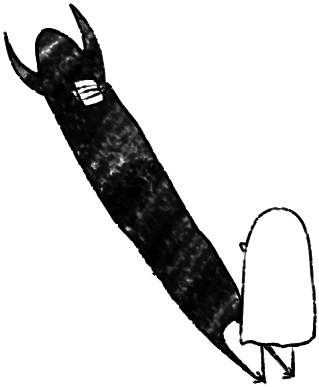
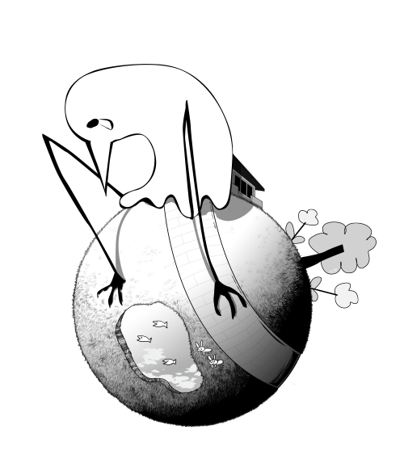
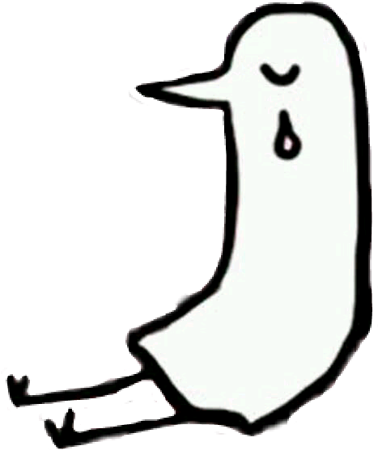

things i'm building.
small list right now. that's the honest version. it grows.

i want to be an
indie game dev.
not for the spotlight. for the same reason i make this site — because i want to make something small and weird that means a lot to a few people. that's enough.
plan: keep building in roblox to sharpen my luau, learn unity / c# properly, prototype something tiny every few months, ship one finished game by end of next year.
learn the tools
luau → c# → unity / godot. one at a time.
nowtiny prototypes
5-minute games. weird mechanics. publish them on itch.io.
2026first real game
something with a soul. punpun-coded. probably sad.
2027+"the only thing you ever really make are the things you actually finish."

small is fine
small projects, finished, beat big projects, imagined. i'd rather ship a tiny weird thing than dream of a perfect one.
make it personal
nobody needs another generic anything. if it's mine, it should feel like me. weirdness > polish, at this stage.